Trang About dựng như trang giới thiệu trong quyển; ảnh, tên, hai ô kính hiện ra lần lượt.
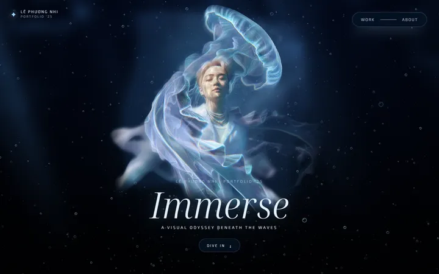
Trở lại người hoá sứa, tăng độ phân giải x2 bằng AI; sứa và voan cuốn lượn quanh người.
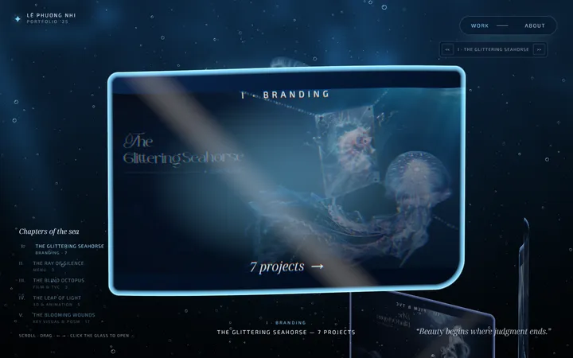
Bìa Chương V ôm cá sư tử, thêm 3 dự án Chương IV; nền trang đầu là cảnh người đi trên mặt nước.
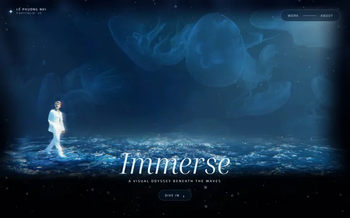
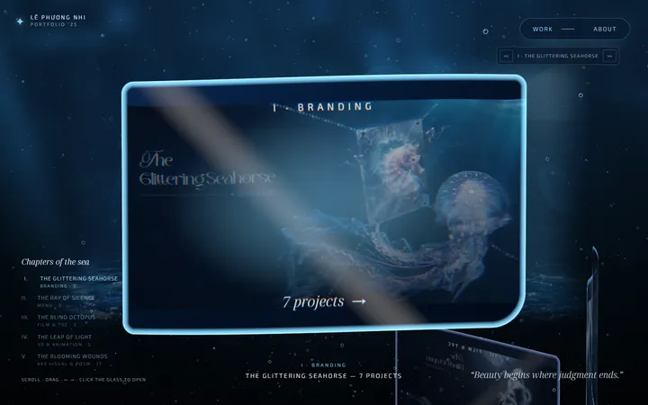
Nhân vật chính là ảnh người hoá sứa dựng 2.5D; vòng quay chỉ còn 5 chương, bấm chương ra lưới sản phẩm.
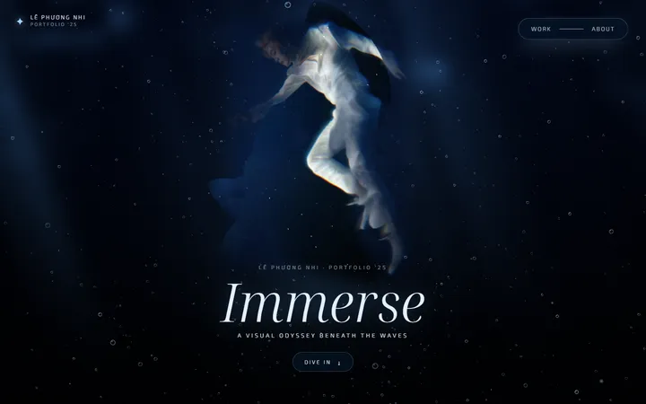
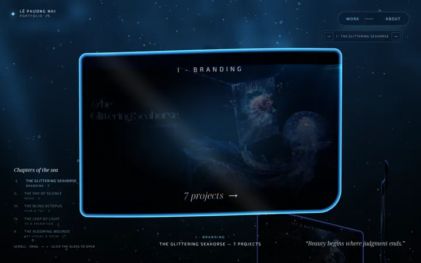
Bìa từng phần hiện đủ tên; tấm kính vừa màn hình điện thoại.
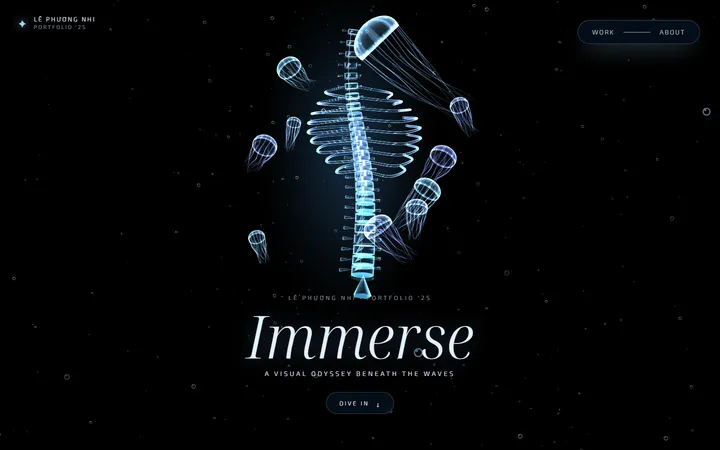
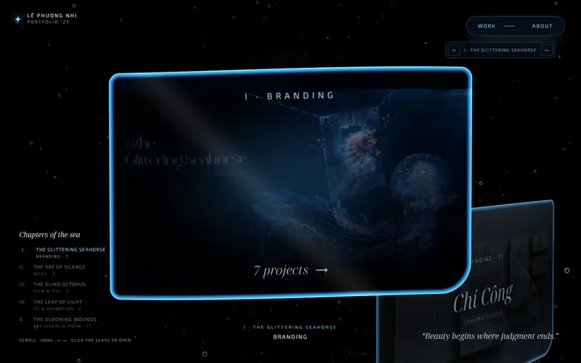
Ảnh gốc của 32 dự án lấy từ PDF; đổi chữ có dấu sang Noto Serif Display.
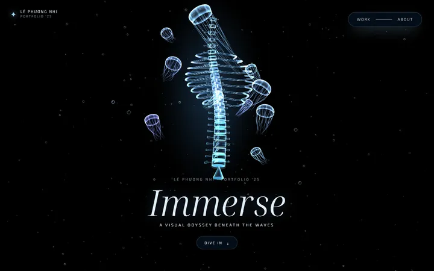
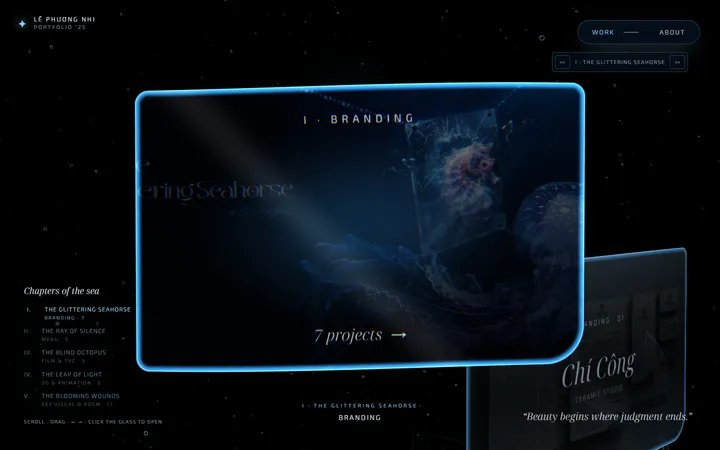
Cột xương sống thủy tinh và đàn sứa vẽ bằng code; 32 dự án là các tấm kính xoắn ốc, chưa có ảnh.
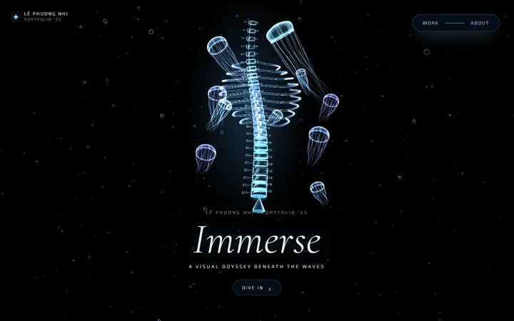
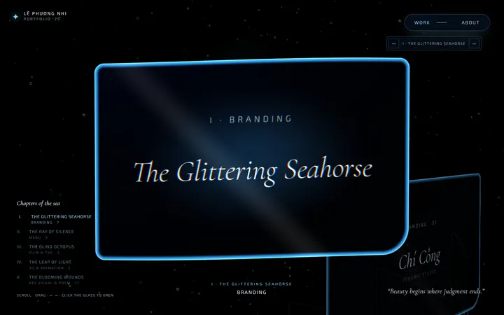